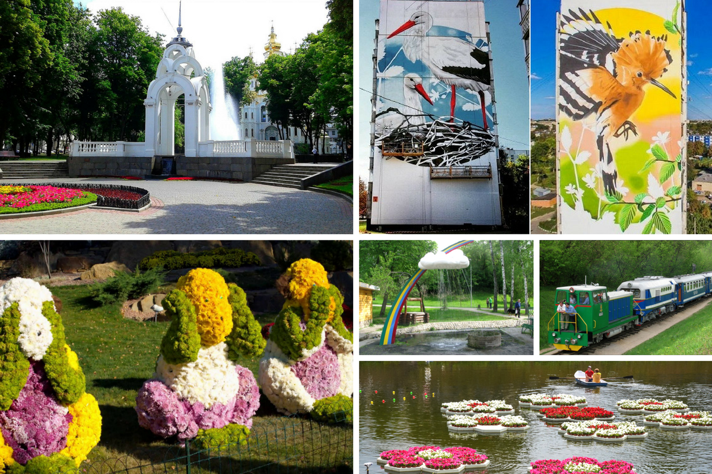

ХАРЬКОВ КАК ОН ЕСТЬ: ПОЧЕМУ ЗДЕСЬ ЖИТЬ ХОРОШО
Душа каждого города уникальна, обладает своим характером, особенностями быта.Прочувствовать их можно лишь пожив в нем некоторое время. Современный дух Харькова сформировался в конце 19 века с основанием первого классического университета, а когда взлетели показатели промышленности, возникло и ядро научно-технического прогресса – технологический институт.
Некогда купеческий город, Харьков быстро подхватывал самые новомодные веяния образования, торговли и деловодства. Ценным наследием стала развитая инфраструктура. В этой метрополии с 1.5 миллионами жителей есть место и городской суете, и тихим уголкам в центре. Как результат — любой его обитатель может выбирать тот темп жизни, который ему импонирует. Второй по величине и по уровню комфорта жизни город в Украине входит в ТОП-200 крупнейших городов мира: по численности населения превышаетМюнхен, и совсем немного отстает от Барселоны.
Харьков – это город, где:
- в одном из спальных районов проживает больше людей, чем в Майами;
- одежду вешают не на “плечики”, а на тремпель”
- есть целый рынок – рай для букинистов;
- говоря в быту по-русски, свободно переключаются на украинский язык и готовы горой стоять за свою страну и ее национальное культурное наследие;
- люди гостеприимны и все больше внимания уделяют иностранным языкам: на улицах все чаще можно услышать английскую, немецкую, французскую и польскую речь и, конечно же, родную украинскую в разных ее акцентах;
- совсем недалеко от центра действует крупнейший в Украине рынок Барабашово, где можно купить все — от иголки до розового слона;

Инфраструктура
Отличительная черта Харькова — это просторные площади, среди которых самая большая в Украине и одна из крупнейших Европе — Площадь Свободы. Она и вправду огромна. Здесь регулярно проходят концерты, флешмобы, фестивали и спортивные соревнования. Каждую зиму на площади красуются новогодняя елка, сказочный городок и бесплатный каток под открытым небом. В 2008 на этой площади легендарную группу Queen вживую услышало и увидело рекордное за всю историю группы число людей — свыше 300 000 человек.
Сообщение между разными частями города обеспечивают троллейбусы, трамваи, маршрутки,комфортабельные автобусы и три ветки метро. В электротранспорте внедряется система электронных
билетов.
Дорога на общественном транспорте даже из отдаленных уголков до центра, железнодорожного вокзала, автовокзала и даже аэропорта занимает не более 40 минут.
Прямые рейсы из Харькова доступны в следующие города:
- Киев (хаб) от $47
- Минск (хаб) (Беларусь) от $116
- Дортмунд (Германия) от $32 — полеты доступны с апреля 2018
- Катовице (Польша) от $21- полеты доступны с июня 2018
- Варшава (хаб) (Польша) от $145
- Тель-Авив (Израиль) от $113
- Стамбул (хаб) (Турция) от $92
- Вена (Австрия) от $25 (c 25.11)
- Батуми (Грузия) от $113 (с 4.06)
- Милан (Италия) от $106 (с 27.04)
Любители природы и парковых зон могут насладиться красотой Ботанического сада, Саржиного Яра, набережной реки Лопань, Лесопарком с действующей детской железной дорогой, и, конечно, Парком Горького и Экопарком Фельдмана, ставших достоянием всей Украины.
